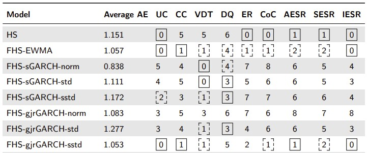

Risk Forecasting of Electricity Futures: VaR and Expected Shortfall on German Power
Financial Engineering specialization project, NTNU, autumn 2024 (grade A) · with Syver Nes
Which risk model should a power trading desk actually use? Electricity futures combine fat tails, volatility clustering and structural shifts (the 2021–22 energy crisis sits in the middle of our sample), making them a demanding testbed for tail-risk forecasting. We benchmarked 31 joint VaR–Expected Shortfall models on eight EEX German futures (base and peak load; day, month, quarter and year front contracts; 1,239 daily observations, 2019–2024), with the model set chosen through a bibliometric review of 272 papers.
Model families
- Historical and filtered historical simulation (EWMA and GARCH filters);
- GARCH and GJR-GARCH with normal, Student-t and skewed-t innovations;
- EVT-GARCH (peaks-over-threshold on standardised residuals);
- GAS models with score-driven dynamics;
- CAViaR-type semiparametric quantile regressions extended to joint ES estimation.
Evaluation
Since ES is not elicitable alone but is jointly elicitable with VaR, models are ranked by the strictly consistent joint loss (Fissler–Ziegel class, AL specification)
$$ L_t \;=\; -\log\!\left( \frac{\alpha - \mathbf{1}\{r_t \le v_t\}}{e_t} \right) \;-\; \frac{e_t - v_t + \mathbf{1}\{r_t \le v_t\}\,(v_t - r_t)/\alpha}{e_t}, $$
complemented by the full backtesting battery (unconditional and conditional coverage, dynamic quantile and VaR duration tests for VaR; expected shortfall regression and corrected-over-cycle tests for ES) and model ranking via the Model Confidence Set of Hansen, Lunde and Nason (2011).
Findings
- No single family dominates across contracts and confidence levels, a result that matters for desks standardising on one model.
- Filtered historical simulation is the most reliable at the 2.5% level; CAViaR-type quantile regressions lead at 5%.
- Plain historical simulation deteriorates sharply on longer-dated contracts, where distributional shifts dominate the lookback window.
